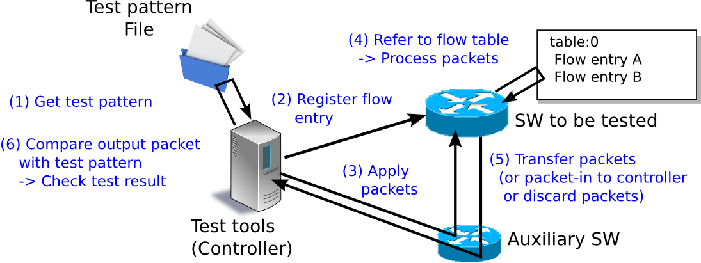
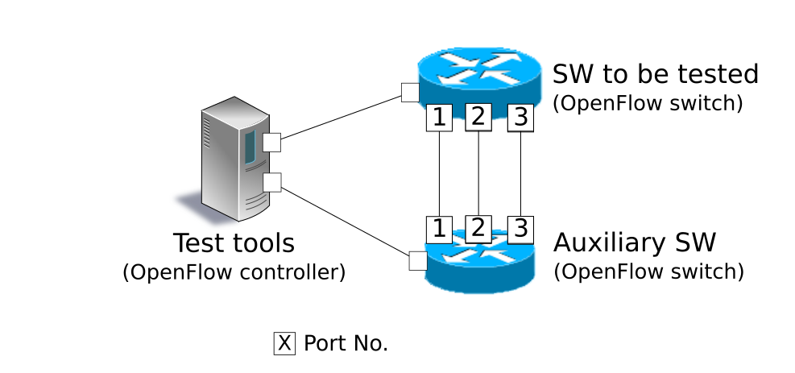

OpenFlow 스위치 테스트 도구¶
이 장에서는 OpenFlow 스위치 OpenFlow 사양 준수의 정도를 검증하는 테스트 도구의 사용 방법을 설명합니다.
테스트 도구의 개요¶
본 도구는 테스트 패턴에 따라 시험할 OpenFlow 스위치에 대해 플로우 항목 및 측정기 항목의 등록 / 패킷 적용을 수행하고, OpenFlow 스위치의 패킷 재 작성 및 전송 (또는 삭제)의 처리 결과와 테스트 패턴 파일에 포함된 「기대하는 처리 결과」의 비교를 실행하여, OpenFlow 스위치 OpenFlow 사양과 대응되는 상태를 확인하는 테스트 도구입니다.
현재 지원하는 OpenFlow 버전은 OpenFlow 1.0, OpenFlow 1.3, 그리고 OpenFlow 1.4 입니다. 또한, 이 도구는 FlowMod 메시지, GroupMod 메시지, 그리고 MeterMod 메시지 시험에 대응하고 있습니다.
| 시험 대상 메시지 | 대응 매개변수 |
|---|---|
| FlowMod 메시지 | match (IN_PHY_PORT 제외) actions (SET_QUEUE) |
| MeterMod 메시지 | 모두 |
| GroupMod 메시지 | 모두 |
적용하는 패킷의 생성과 패킷 재 작성 결과의 확인 등은 「 패킷 라이브러리 」 를 사용하고 있습니다.
시험 실행 이미지¶
테스트 도구를 실행했을 때의 동작 이미지를 보여줍니다. 테스트 패턴 파일 에는 「적용 플로우 항목 또는 미터 항목」, 「적용 패킷」, 「기대하는 처리 결과」가 설명됩니다. 또한 도구 실행을 위한 환경 설정 내용은 뒤에 설명합니다 (도구 실행 환경 참조).
{kind=link}
시험 결과의 출력 이미지¶
지정된 테스트 패턴 테스트 항목을 순서대로 수행하고 시험 결과 (OK/ERROR)를 출력합니다. 시험 결과가 ERROR인 경우 오류 정보를 함께 출력합니다. 또한 시험 전체의 OK/ERROR 개수 및 발생한 ERROR 내역도 출력합니다.
--- Test start ---
match: 29_ICMPV6_TYPE
ethernet/ipv6/icmpv6(type=128)-->'icmpv6_type=128,actions=output:2' OK
ethernet/ipv6/icmpv6(type=128)-->'icmpv6_type=128,actions=output:CONTROLLER' OK
ethernet/ipv6/icmpv6(type=135)-->'icmpv6_type=128,actions=output:2' OK
ethernet/vlan/ipv6/icmpv6(type=128)-->'icmpv6_type=128,actions=output:2' ERROR
Received incorrect packet-in: ethernet(ethertype=34525)
ethernet/vlan/ipv6/icmpv6(type=128)-->'icmpv6_type=128,actions=output:CONTROLLER' ERROR
Received incorrect packet-in: ethernet(ethertype=34525)
match: 30_ICMPV6_CODE
ethernet/ipv6/icmpv6(code=0)-->'icmpv6_code=0,actions=output:2' OK
ethernet/ipv6/icmpv6(code=0)-->'icmpv6_code=0,actions=output:CONTROLLER' OK
ethernet/ipv6/icmpv6(code=1)-->'icmpv6_code=0,actions=output:2' OK
ethernet/vlan/ipv6/icmpv6(code=0)-->'icmpv6_code=0,actions=output:2' ERROR
Received incorrect packet-in: ethernet(ethertype=34525)
ethernet/vlan/ipv6/icmpv6(code=0)-->'icmpv6_code=0,actions=output:CONTROLLER' ERROR
Received incorrect packet-in: ethernet(ethertype=34525)
--- Test end ---
--- Test report ---
Received incorrect packet-in(4)
match: 29_ICMPV6_TYPE ethernet/vlan/ipv6/icmpv6(type=128)-->'icmpv6_type=128,actions=output:2'
match: 29_ICMPV6_TYPE ethernet/vlan/ipv6/icmpv6(type=128)-->'icmpv6_type=128,actions=output:CONTROLLER'
match: 30_ICMPV6_CODE ethernet/vlan/ipv6/icmpv6(code=0)-->'icmpv6_code=0,actions=output:2'
match: 30_ICMPV6_CODE ethernet/vlan/ipv6/icmpv6(code=0)-->'icmpv6_code=0,actions=output:CONTROLLER'
OK(6) / ERROR(4)
사용 방법¶
테스트 도구의 사용 방법을 설명합니다.
도구 실행 환경¶
테스트 도구 실행을 위한 환경은 다음과 같습니다.
{kind=link}
보조 스위치로 다음 동작을 완료 할 수 있는 OpenFlow 스위치가 필요합니다.
- actions=CONTROLLER의 플로우 항목 등록
- 처리량 측정을위한 플로우 항목 등록
- actions=CONTROLLER의 플로우 항목에 의한 Packet-In 메시지 보내기
- Packet-Out 메시지 수신에 의한 패킷 전송
주석
Open vSwitch를 시험 대상 스위치로 하는 도구 실행 환경을 mininet에서 실현한 환경 구축 스크립트가 Ryu 소스 트리에 포함되어 있습니다.
ryu/tests/switch/run_mininet.py
스크립트 예제는 「 테스트 도구 사용 예 」에 기재되어 있습니다.
테스트 도구 실행 환경¶
테스트 도구 Ryu 소스 트리에 게시되어 있습니다.
소스 코드 설명 ryu/tests/switch/tester.py 테스트 도구 ryu/tests/switch/of10 테스트 패턴 샘플(OpenFlow 1.0용) ryu/tests/switch/of13 테스트 패턴 샘플(OpenFlow 1.3용) ryu/tests/switch/of14 테스트 패턴 샘플(OpenFlow 1.4용) ryu/tests/switch/run_mininet.py 시험 환경 구축 스크립트
테스트 도구는 다음 명령을 실행합니다.
$ ryu-manager [--test-switch-target DPID] [--test-switch-tester DPID]
[--test-switch-target-version VERSION] [--test-switch-tester-version VERSION]
[--test-switch-dir DIRECTORY] ryu/tests/switch/tester.py
| 옵션 | 설명 | 기본값 |
|---|---|---|
--test-switch-target |
시험 대상 스위치의 데이터 경로 ID | 0000000000000001 |
--test-switch-tester |
보조 스위치의 데이터 경로 ID | 0000000000000002 |
--test-switch-target-version |
시험 대상 스위치의 OpenFlow 버전 (“openflow10”,”openflow13”, openflow14” 지정 가능) | openflow13 |
--test-switch-tester-version |
보조 스위치의 OpenFlow 버전 (“openflow10”,”openflow13”, openflow14” 지정 가능) | openflow13 |
--test-switch-dir |
테스트 패턴 파일의 디렉토리 경로 | ryu/tests/switch/of13 |
주석
테스트 도구 Ryu 응용 프로그램은 ryu.base.app_manager.RyuApp을 상속하여 만들었기 때문에, 다른 Ryu 응용 프로그램과 마찬가지로 –verbose 옵션으로 디버깅 정보 출력 등을 지원합니다.
테스트 도구를 시작한 후 시험 대상 스위치와 보조 스위치 컨트롤러에 연결되면 지정된 테스트 패턴을 바탕으로 시험이 시작됩니다. 연결된 스위치 OpenFlow 버전이 지정한 OpenFlow 버전과 다른 경우에는 관련 메시지가 표시되고 올바른 버전의 연결을 기다립니다.
테스트 도구 사용 예¶
샘플 테스트 패턴과 원본 테스트 패턴을 이용한 테스트 도구의 실행 단계를 소개합니다.
샘플 테스트 패턴의 실행 단계¶
Ryu 소스 트리의 샘플 테스트 패턴 (ryu/tests/switch/of13)을 이용한 테스트 도구 실행 단계를 보여줍니다.
주석
Ryu 소스 트리에는 샘플 테스트 패턴으로 FlowMod 메시지에 대해 match/actions로 지정 가능한 각 매개 변수 및 MeterMod 메시지의 각 파라미터나 GroupMod 메시지의 각 파라미터가 각각 정상적으로 작동하는지 확인하는 테스트 패턴 파일이 OpenFlow 1.0용, OpenFlow 1.3용 및 OpenFlow 1.4용으로 준비되어 있습니다.
ryu/tests/switch/of10
ryu/tests/switch/of13
ryu/tests/switch/of14
이 단계에서는 시험 환경 구축 스크립트 (ryu/tests/switch/run_mininet.py) 를 이용하여 구축합니다. 따라서 시험 대상 스위치는 Open vSwitch입니다. VM 이미지 사용을 위한 환경 설정 및 로그인 방법 등은 「 스위칭 허브 」 을 참조하십시오.
시험 환경 구축
VM 환경에 로그인하고 시험 환경 구축 스크립트를 실행합니다.
ryu@ryu-vm:~$ sudo ryu/ryu/tests/switch/run_mininet.py
net 명령의 실행 결과는 다음과 같습니다.
mininet> net c0 s1 lo: s1-eth1:s2-eth1 s1-eth2:s2-eth2 s1-eth3:s2-eth3 s2 lo: s2-eth1:s1-eth1 s2-eth2:s1-eth2 s2-eth3:s1-eth3
테스트 도구 실행
테스트 도구 실행을 위한 컨트롤러의 xterm을 엽니다.
mininet> xterm c0
「Node: c0 (root)」의 xterm에서 테스트 도구를 실행합니다. 이때 테스트 패턴 파일 디렉토리로 샘플 테스트 패턴의 디렉토리 (ryu/tests/switch/of13)을 지정합니다. 또한 mininet 환경 시험 대상 스위치와 보조 스위치의 데이터 경로 ID는 각각 –test-switch-target/–test-switch-tester 옵션 기본값으로 되어 있기 때문에 옵션을 생략합니다. 또한 시험 대상 스위치와 보조 스위치 OpenFlow 버전은 각각 –test-switch-target-version / –test-switch-tester-version 옵션의 기본값으로 되어 있기 때문에 해당 옵션 또한 생략합니다.
Node: c0:
root@ryu-vm:~$ ryu-manager --test-switch-dir ryu/ryu/tests/switch/of13 ryu/ryu/tests/switch/tester.py
도구를 실행하면 다음과 같이 표시되고 시험되는 스위치와 보조 스위치가 컨트롤러에 연결될 때까지 기다립니다.
root@ryu-vm:~$ ryu-manager --test-switch-dir ryu/ryu/tests/switch/of13/ ryu/ryu/tests/switch/tester.py loading app ryu/ryu/tests/switch/tester.py loading app ryu.controller.ofp_handler instantiating app ryu/ryu/tests/switch/tester.py of OfTester target_dpid=0000000000000001 tester_dpid=0000000000000002 Test files directory = ryu/ryu/tests/switch/of13/ instantiating app ryu.controller.ofp_handler of OFPHandler --- Test start --- waiting for switches connection...
시험 대상 스위치와 보조 스위치가 컨트롤러에 연결되면 시험이 시작됩니다.
root@ryu-vm:~$ ryu-manager --test-switch-dir ryu/ryu/tests/switch/of13/ ryu/ryu/tests/switch/tester.py loading app ryu/ryu/tests/switch/tester.py loading app ryu.controller.ofp_handler instantiating app ryu/ryu/tests/switch/tester.py of OfTester target_dpid=0000000000000001 tester_dpid=0000000000000002 Test files directory = ryu/ryu/tests/switch/of13/ instantiating app ryu.controller.ofp_handler of OFPHandler --- Test start --- waiting for switches connection... dpid=0000000000000002 : Join tester SW. dpid=0000000000000001 : Join target SW. action: 00_OUTPUT ethernet/ipv4/tcp-->'actions=output:2' OK ethernet/ipv6/tcp-->'actions=output:2' OK ethernet/arp-->'actions=output:2' OK action: 11_COPY_TTL_OUT ethernet/mpls(ttl=64)/ipv4(ttl=32)/tcp-->'eth_type=0x8847,actions=copy_ttl_out,output:2' ERROR Failed to add flows: OFPErrorMsg[type=0x02, code=0x00] ethernet/mpls(ttl=64)/ipv6(hop_limit=32)/tcp-->'eth_type=0x8847,actions=copy_ttl_out,output:2' ERROR Failed to add flows: OFPErrorMsg[type=0x02, code=0x00] ...ryu/tests/switch/of13 부하의 모든 샘플 테스트 패턴의 시험이 완료되면 테스트 도구는 종료됩니다.
<참고>샘플 테스트 패턴 파일 목록¶
match／actions의 각 설정 항목에 해당하는 플로우 항목을 등록하고 플로우 항목에 match하는 (또는 match하지 않는) 여러 패턴의 패킷을 적용하는 테스트 패턴과 일정 빈도 이상에 대해 삭제 또는 우선 순위를 변경할 미터 항목을 등록하고 미터 항목에 match 패킷을 연속적으로 적용하는 테스트 패턴 및 모든 포트에 FLOODING하는 type=ALL인 그룹 항목과 분류 조건에 따라 출력 포트를 자동으로 변경하는 type=SELECT인 그룹 항목을 등록하여 그룹 항목에 match 패킷을 연속적으로 적용하는 테스트 패턴이 OpenFlow 1.0용, OpenFlow 1.3용과 OpenFlow 1.4용으로 각각 준비되어 있습니다.
OpenFlow 1.0:
ryu/tests/switch/of10/action: 00_OUTPUT.json 06_SET_NW_SRC.json 09_SET_TP_SRC_IPv6_TCP.json 01_SET_VLAN_VID.json 07_SET_NW_DST.json 09_SET_TP_SRC_IPv6_UDP.json 02_SET_VLAN_PCP.json 08_SET_NW_TOS_IPv4.json 10_SET_TP_DST_IPv4_TCP.json 03_STRIP_VLAN.json 08_SET_NW_TOS_IPv6.json 10_SET_TP_DST_IPv4_UDP.json 04_SET_DL_SRC.json 09_SET_TP_SRC_IPv4_TCP.json 10_SET_TP_DST_IPv6_TCP.json 05_SET_DL_DST.json 09_SET_TP_SRC_IPv4_UDP.json 10_SET_TP_DST_IPv6_UDP.json ryu/tests/switch/of10/match: 00_IN_PORT.json 07_NW_PROTO_IPv4.json 10_TP_SRC_IPv6_TCP.json 01_DL_SRC.json 07_NW_PROTO_IPv6.json 10_TP_SRC_IPv6_UDP.json 02_DL_DST.json 08_NW_SRC.json 11_TP_DST_IPv4_TCP.json 03_DL_VLAN.json 08_NW_SRC_Mask.json 11_TP_DST_IPv4_UDP.json 04_DL_VLAN_PCP.json 09_NW_DST.json 11_TP_DST_IPv6_TCP.json 05_DL_TYPE.json 09_NW_DST_Mask.json 11_TP_DST_IPv6_UDP.json 06_NW_TOS_IPv4.json 10_TP_SRC_IPv4_TCP.json 06_NW_TOS_IPv6.json 10_TP_SRC_IPv4_UDP.jsonOpenFlow 1.3:
ryu/tests/switch/of13/action: 00_OUTPUT.json 20_POP_MPLS.json 11_COPY_TTL_OUT.json 23_SET_NW_TTL_IPv4.json 12_COPY_TTL_IN.json 23_SET_NW_TTL_IPv6.json 15_SET_MPLS_TTL.json 24_DEC_NW_TTL_IPv4.json 16_DEC_MPLS_TTL.json 24_DEC_NW_TTL_IPv6.json 17_PUSH_VLAN.json 25_SET_FIELD 17_PUSH_VLAN_multiple.json 26_PUSH_PBB.json 18_POP_VLAN.json 26_PUSH_PBB_multiple.json 19_PUSH_MPLS.json 27_POP_PBB.json 19_PUSH_MPLS_multiple.json ryu/tests/switch/of13/action/25_SET_FIELD: 03_ETH_DST.json 14_TCP_DST_IPv4.json 24_ARP_SHA.json 04_ETH_SRC.json 14_TCP_DST_IPv6.json 25_ARP_THA.json 05_ETH_TYPE.json 15_UDP_SRC_IPv4.json 26_IPV6_SRC.json 06_VLAN_VID.json 15_UDP_SRC_IPv6.json 27_IPV6_DST.json 07_VLAN_PCP.json 16_UDP_DST_IPv4.json 28_IPV6_FLABEL.json 08_IP_DSCP_IPv4.json 16_UDP_DST_IPv6.json 29_ICMPV6_TYPE.json 08_IP_DSCP_IPv6.json 17_SCTP_SRC_IPv4.json 30_ICMPV6_CODE.json 09_IP_ECN_IPv4.json 17_SCTP_SRC_IPv6.json 31_IPV6_ND_TARGET.json 09_IP_ECN_IPv6.json 18_SCTP_DST_IPv4.json 32_IPV6_ND_SLL.json 10_IP_PROTO_IPv4.json 18_SCTP_DST_IPv6.json 33_IPV6_ND_TLL.json 10_IP_PROTO_IPv6.json 19_ICMPV4_TYPE.json 34_MPLS_LABEL.json 11_IPV4_SRC.json 20_ICMPV4_CODE.json 35_MPLS_TC.json 12_IPV4_DST.json 21_ARP_OP.json 36_MPLS_BOS.json 13_TCP_SRC_IPv4.json 22_ARP_SPA.json 37_PBB_ISID.json 13_TCP_SRC_IPv6.json 23_ARP_TPA.json 38_TUNNEL_ID.json ryu/tests/switch/of13/group: 00_ALL.json 01_SELECT_IP.json 01_SELECT_Weight_IP.json 01_SELECT_Ether.json 01_SELECT_Weight_Ether.json ryu/tests/switch/of13/match: 00_IN_PORT.json 13_TCP_SRC_IPv6.json 26_IPV6_SRC.json 02_METADATA.json 14_TCP_DST_IPv4.json 26_IPV6_SRC_Mask.json 02_METADATA_Mask.json 14_TCP_DST_IPv6.json 27_IPV6_DST.json 03_ETH_DST.json 15_UDP_SRC_IPv4.json 27_IPV6_DST_Mask.json 03_ETH_DST_Mask.json 15_UDP_SRC_IPv6.json 28_IPV6_FLABEL.json 04_ETH_SRC.json 16_UDP_DST_IPv4.json 28_IPV6_FLABEL_Mask.json 04_ETH_SRC_Mask.json 16_UDP_DST_IPv6.json 29_ICMPV6_TYPE.json 05_ETH_TYPE.json 17_SCTP_SRC_IPv4.json 30_ICMPV6_CODE.json 06_VLAN_VID.json 17_SCTP_SRC_IPv6.json 31_IPV6_ND_TARGET.json 06_VLAN_VID_Mask.json 18_SCTP_DST_IPv4.json 32_IPV6_ND_SLL.json 07_VLAN_PCP.json 18_SCTP_DST_IPv6.json 33_IPV6_ND_TLL.json 08_IP_DSCP_IPv4.json 19_ICMPV4_TYPE.json 34_MPLS_LABEL.json 08_IP_DSCP_IPv6.json 20_ICMPV4_CODE.json 35_MPLS_TC.json 09_IP_ECN_IPv4.json 21_ARP_OP.json 36_MPLS_BOS.json 09_IP_ECN_IPv6.json 22_ARP_SPA.json 37_PBB_ISID.json 10_IP_PROTO_IPv4.json 22_ARP_SPA_Mask.json 37_PBB_ISID_Mask.json 10_IP_PROTO_IPv6.json 23_ARP_TPA.json 38_TUNNEL_ID.json 11_IPV4_SRC.json 23_ARP_TPA_Mask.json 38_TUNNEL_ID_Mask.json 11_IPV4_SRC_Mask.json 24_ARP_SHA.json 39_IPV6_EXTHDR.json 12_IPV4_DST.json 24_ARP_SHA_Mask.json 39_IPV6_EXTHDR_Mask.json 12_IPV4_DST_Mask.json 25_ARP_THA.json 13_TCP_SRC_IPv4.json 25_ARP_THA_Mask.json ryu/tests/switch/of13/meter: 01_DROP_00_KBPS_00_1M.json 02_DSCP_REMARK_00_KBPS_00_1M.json 01_DROP_00_KBPS_01_10M.json 02_DSCP_REMARK_00_KBPS_01_10M.json 01_DROP_00_KBPS_02_100M.json 02_DSCP_REMARK_00_KBPS_02_100M.json 01_DROP_01_PKTPS_00_100.json 02_DSCP_REMARK_01_PKTPS_00_100.json 01_DROP_01_PKTPS_01_1000.json 02_DSCP_REMARK_01_PKTPS_01_1000.json 01_DROP_01_PKTPS_02_10000.json 02_DSCP_REMARK_01_PKTPS_02_10000.jsonOpenFlow 1.4:
ryu/tests/switch/of14/action: 00_OUTPUT.json 20_POP_MPLS.json 11_COPY_TTL_OUT.json 23_SET_NW_TTL_IPv4.json 12_COPY_TTL_IN.json 23_SET_NW_TTL_IPv6.json 15_SET_MPLS_TTL.json 24_DEC_NW_TTL_IPv4.json 16_DEC_MPLS_TTL.json 24_DEC_NW_TTL_IPv6.json 17_PUSH_VLAN.json 25_SET_FIELD 17_PUSH_VLAN_multiple.json 26_PUSH_PBB.json 18_POP_VLAN.json 26_PUSH_PBB_multiple.json 19_PUSH_MPLS.json 27_POP_PBB.json 19_PUSH_MPLS_multiple.json ryu/tests/switch/of14/action/25_SET_FIELD: 03_ETH_DST.json 14_TCP_DST_IPv6.json 26_IPV6_SRC.json 04_ETH_SRC.json 15_UDP_SRC_IPv4.json 27_IPV6_DST.json 05_ETH_TYPE.json 15_UDP_SRC_IPv6.json 28_IPV6_FLABEL.json 06_VLAN_VID.json 16_UDP_DST_IPv4.json 29_ICMPV6_TYPE.json 07_VLAN_PCP.json 16_UDP_DST_IPv6.json 30_ICMPV6_CODE.json 08_IP_DSCP_IPv4.json 17_SCTP_SRC_IPv4.json 31_IPV6_ND_TARGET.json 08_IP_DSCP_IPv6.json 17_SCTP_SRC_IPv6.json 32_IPV6_ND_SLL.json 09_IP_ECN_IPv4.json 18_SCTP_DST_IPv4.json 33_IPV6_ND_TLL.json 09_IP_ECN_IPv6.json 18_SCTP_DST_IPv6.json 34_MPLS_LABEL.json 10_IP_PROTO_IPv4.json 19_ICMPV4_TYPE.json 35_MPLS_TC.json 10_IP_PROTO_IPv6.json 20_ICMPV4_CODE.json 36_MPLS_BOS.json 11_IPV4_SRC.json 21_ARP_OP.json 37_PBB_ISID.json 12_IPV4_DST.json 22_ARP_SPA.json 38_TUNNEL_ID.json 13_TCP_SRC_IPv4.json 23_ARP_TPA.json 41_PBB_UCA.json 13_TCP_SRC_IPv6.json 24_ARP_SHA.json 14_TCP_DST_IPv4.json 25_ARP_THA.json ryu/tests/switch/of14/group: 00_ALL.json 01_SELECT_IP.json 01_SELECT_Weight_IP.json 01_SELECT_Ether.json 01_SELECT_Weight_Ether.json ryu/tests/switch/of14/match: 00_IN_PORT.json 13_TCP_SRC_IPv6.json 26_IPV6_SRC.json 02_METADATA.json 14_TCP_DST_IPv4.json 26_IPV6_SRC_Mask.json 02_METADATA_Mask.json 14_TCP_DST_IPv6.json 27_IPV6_DST.json 03_ETH_DST.json 15_UDP_SRC_IPv4.json 27_IPV6_DST_Mask.json 03_ETH_DST_Mask.json 15_UDP_SRC_IPv6.json 28_IPV6_FLABEL.json 04_ETH_SRC.json 16_UDP_DST_IPv4.json 28_IPV6_FLABEL_Mask.json 04_ETH_SRC_Mask.json 16_UDP_DST_IPv6.json 29_ICMPV6_TYPE.json 05_ETH_TYPE.json 17_SCTP_SRC_IPv4.json 30_ICMPV6_CODE.json 06_VLAN_VID.json 17_SCTP_SRC_IPv6.json 31_IPV6_ND_TARGET.json 06_VLAN_VID_Mask.json 18_SCTP_DST_IPv4.json 32_IPV6_ND_SLL.json 07_VLAN_PCP.json 18_SCTP_DST_IPv6.json 33_IPV6_ND_TLL.json 08_IP_DSCP_IPv4.json 19_ICMPV4_TYPE.json 34_MPLS_LABEL.json 08_IP_DSCP_IPv6.json 20_ICMPV4_CODE.json 35_MPLS_TC.json 09_IP_ECN_IPv4.json 21_ARP_OP.json 36_MPLS_BOS.json 09_IP_ECN_IPv6.json 22_ARP_SPA.json 37_PBB_ISID.json 10_IP_PROTO_IPv4.json 22_ARP_SPA_Mask.json 37_PBB_ISID_Mask.json 10_IP_PROTO_IPv6.json 23_ARP_TPA.json 38_TUNNEL_ID.json 11_IPV4_SRC.json 23_ARP_TPA_Mask.json 38_TUNNEL_ID_Mask.json 11_IPV4_SRC_Mask.json 24_ARP_SHA.json 39_IPV6_EXTHDR.json 12_IPV4_DST.json 24_ARP_SHA_Mask.json 39_IPV6_EXTHDR_Mask.json 12_IPV4_DST_Mask.json 25_ARP_THA.json 41_PBB_UCA.json 13_TCP_SRC_IPv4.json 25_ARP_THA_Mask.json ryu/tests/switch/of14/meter: 01_DROP_00_KBPS_00_1M.json 02_DSCP_REMARK_00_KBPS_00_1M.json 01_DROP_00_KBPS_01_10M.json 02_DSCP_REMARK_00_KBPS_01_10M.json 01_DROP_00_KBPS_02_100M.json 02_DSCP_REMARK_00_KBPS_02_100M.json 01_DROP_01_PKTPS_00_100.json 02_DSCP_REMARK_01_PKTPS_00_100.json 01_DROP_01_PKTPS_01_1000.json 02_DSCP_REMARK_01_PKTPS_01_1000.json 01_DROP_01_PKTPS_02_10000.json 02_DSCP_REMARK_01_PKTPS_02_10000.json
기존 테스트 패턴의 실행 단계¶
원본 테스트 패턴을 만들고 테스트 도구를 실행하는 방법을 설명합니다.
예를 들어, OpenFlow 스위치가 라우터 기능을 실현하기 위해 필요한 match / actions을 처리하는 기능을 가지고 있는지 확인하는 테스트 패턴을 만듭니다.
1．테스트 패턴 생성
라우터가 라우팅 테이블에 따라 패킷을 전송하는 기능을 제공하는 다음 플로우 항목이 제대로 작동하는지 시험합니다.
match actions 대상IP주소 범위 「192.168.30.0/24」 원본 MAC주소를 「aa:aa:aa:aa:aa:aa」로 수정
대상 MAC주소를 「bb:bb:bb:bb:bb:bb」로 수정
TTL 빼기
패킷 전송
이 테스트 패턴을 실행하는 테스트 패턴 파일을 만듭니다.
작성 예는 다음과 같습니다.
주석
테스트 패턴 파일의 구체적인 작성 방법은 「 테스트 패턴 파일 작성 방법 」을 참고하시기 바랍니다.
파일 이름： sample_test_pattern.json
[
"sample: Router test",
{
"description": "static routing table",
"prerequisite": [
{
"OFPFlowMod": {
"table_id": 0,
"match": {
"OFPMatch": {
"oxm_fields": [
{
"OXMTlv": {
"field": "eth_type",
"value": 2048
}
},
{
"OXMTlv": {
"field": "ipv4_dst",
"mask": 4294967040,
"value": "192.168.30.0"
}
}
]
}
},
"instructions":[
{
"OFPInstructionActions": {
"actions":[
{
"OFPActionSetField":{
"field":{
"OXMTlv":{
"field":"eth_src",
"value":"aa:aa:aa:aa:aa:aa"
}
}
}
},
{
"OFPActionSetField":{
"field":{
"OXMTlv":{
"field":"eth_dst",
"value":"bb:bb:bb:bb:bb:bb"
}
}
}
},
{
"OFPActionDecNwTtl":{}
},
{
"OFPActionOutput": {
"port":2
}
}
],
"type": 4
}
}
]
}
}
],
"tests":[
{
"ingress":[
"ethernet(dst='22:22:22:22:22:22',src='11:11:11:11:11:11',ethertype=2048)",
"ipv4(tos=32, proto=6, src='192.168.10.10', dst='192.168.30.10', ttl=64)",
"tcp(dst_port=2222, option='\\x00\\x00\\x00\\x00', src_port=11111)",
"'\\x01\\x02\\x03\\x04\\x05\\x06\\x07\\x08\\t\\n\\x0b\\x0c\\r\\x0e\\x0f'"
],
"egress":[
"ethernet(dst='bb:bb:bb:bb:bb:bb',src='aa:aa:aa:aa:aa:aa',ethertype=2048)",
"ipv4(tos=32, proto=6, src='192.168.10.10', dst='192.168.30.10', ttl=63)",
"tcp(dst_port=2222, option='\\x00\\x00\\x00\\x00', src_port=11111)",
"'\\x01\\x02\\x03\\x04\\x05\\x06\\x07\\x08\\t\\n\\x0b\\x0c\\r\\x0e\\x0f'"
]
}
]
}
]
2．시험 환경 구축
시험 환경 구축 스크립트를 사용하여 시험 환경을 구축합니다. 절차는 샘플 테스트 패턴의 실행 단계 을 참조하십시오.
3．테스트 도구 실행
컨트롤러 xterm에서 방금 만든 원래의 테스트 패턴 파일 를 지정하여 테스트 도구를 실행합니다. 또한, –test-switch-dir 옵션은 디렉토리뿐만 아니라 파일을 직접 지정할 수 있습니다. 또한 송수신 패킷의 내용을 확인하기 위해 –verbose 옵션을 지정합니다.
Node: c0:
root@ryu-vm:~$ ryu-manager --verbose --test-switch-dir ./sample_test_pattern.json ryu/ryu/tests/switch/tester.py시험 대상 스위치와 보조 스위치가 컨트롤러에 연결되면 시험이 시작됩니다.
「dpid=0000000000000002 : receive_packet...」로깅에서 테스트 패턴 파일 egress 패킷으로 설정한 예상 출력 패킷이 전송된 것을 알 수 있습니다. 또한, 여기에서는 테스트 도구가 출력한 로그만을 발췌하였습니다.
root@ryu-vm:~$ ryu-manager --verbose --test-switch-dir ./sample_test_pattern.json ryu/ryu/tests/switch/tester.py loading app ryu/tests/switch/tester.py loading app ryu.controller.ofp_handler instantiating app ryu.controller.ofp_handler of OFPHandler instantiating app ryu/tests/switch/tester.py of OfTester target_dpid=0000000000000001 tester_dpid=0000000000000002 Test files directory = ./sample_test_pattern.json --- Test start --- waiting for switches connection... dpid=0000000000000002 : Join tester SW. dpid=0000000000000001 : Join target SW. sample: Router test send_packet:[ethernet(dst='22:22:22:22:22:22',ethertype=2048,src='11:11:11:11:11:11'), ipv4(csum=53560,dst='192.168.30.10',flags=0,header_length=5,identification=0,offset=0,option=None,proto=6,src='192.168.10.10',tos=32,total_length=59,ttl=64,version=4), tcp(ack=0,bits=0,csum=33311,dst_port=2222,offset=6,option='\x00\x00\x00\x00',seq=0,src_port=11111,urgent=0,window_size=0), '\x01\x02\x03\x04\x05\x06\x07\x08\t\n\x0b\x0c\r\x0e\x0f'] egress:[ethernet(dst='bb:bb:bb:bb:bb:bb',ethertype=2048,src='aa:aa:aa:aa:aa:aa'), ipv4(csum=53816,dst='192.168.30.10',flags=0,header_length=5,identification=0,offset=0,option=None,proto=6,src='192.168.10.10',tos=32,total_length=59,ttl=63,version=4), tcp(ack=0,bits=0,csum=33311,dst_port=2222,offset=6,option='\x00\x00\x00\x00',seq=0,src_port=11111,urgent=0,window_size=0), '\x01\x02\x03\x04\x05\x06\x07\x08\t\n\x0b\x0c\r\x0e\x0f'] packet_in:[] dpid=0000000000000002 : receive_packet[ethernet(dst='bb:bb:bb:bb:bb:bb',ethertype=2048,src='aa:aa:aa:aa:aa:aa'), ipv4(csum=53816,dst='192.168.30.10',flags=0,header_length=5,identification=0,offset=0,option=None,proto=6,src='192.168.10.10',tos=32,total_length=59,ttl=63,version=4), tcp(ack=0,bits=0,csum=33311,dst_port=2222,offset=6,option='\x00\x00\x00\x00',seq=0,src_port=11111,urgent=0,window_size=0), '\x01\x02\x03\x04\x05\x06\x07\x08\t\n\x0b\x0c\r\x0e\x0f'] static routing table OK --- Test end ---실제로 OpenFlow 스위치에 등록된 플로우 항목은 다음과 같습니다. 테스트 도구에 의해 등록된 패킷 플로우 항목에 match하고 n_packets가 올라가는 것을 알 수 있습니다.
Node: s1:
root@ryu-vm:~# ovs-ofctl -O OpenFlow13 dump-flows s1 OFPST_FLOW reply (OF1.3) (xid=0x2): cookie=0x0, duration=56.217s, table=0, n_packets=1, n_bytes=73, priority=0,ip,nw_dst=192.168.30.0/24 actions=set_field:aa:aa:aa:aa:aa:aa->eth_src,set_field:bb:bb:bb:bb:bb:bb->eth_dst,dec_ttl,output:2
테스트 패턴 파일 작성 방법¶
테스트 패턴 파일 확장자는 「. json」에 해당하는 텍스트 파일입니다. 다음 형식과 같이 작성합니다.
[
"xxxxxxxxxx", # 시험 항목 이름
{
"description": "xxxxxxxxxx", # 시험 내용 설명
"prerequisite": [
{
"OFPFlowMod": {...} # 등록하는 플로우 항목, 미터 항목, 그룹 항목
}, # (Ryu의 OFPFlowMod, OFPMeterMod, OFPGroupMod를
{ # json 형식으로 작성)
"OFPMeterMod": {...} # 플로우 항목에서 기대하는 처리 결과가
}, # 패킷 전송 (actions = output)의 경우
{ # 출력 포트 번호에 「2」를 지정하십시오
"OFPGroupMod": {...} # 그룹 항목에서 패킷 전송을 할 경우
}, # 출력 포트 번호는 「2」또는 「3」을
{...} # 지정하십시오
],
"tests": [
{
# 적용 패킷
# 1 번만 적용할지 일정 시간 연속하여 적용 계속 여부에 따라
# (A)(B) 중 하나를 설명
# (A) 1번 적용
"ingress": [
"ethernet(...)", # (Ryu 패킷 라이브러리 생성자의 형식으로 작성)
"ipv4(...)",
"tcp(...)"
],
# (B) 일정 시간 연속 적용
"ingress": {
"packets":{
"data":[
"ethernet(...)", # (A)와 동일
"ipv4(...)",
"tcp(...)"
],
"pktps": 1000, # 초당 적용하는 패킷 수를 지정
"duration_time": 30 # 연속 적용 시간을 초 단위로 지정
}
},
# 기대할 처리 결과
# 처리 결과의 종별에 따라 (a) (b) (c) (d) 중 하나를 설명
# (a) 패킷 전송 (actions = output : X)의 확인 시험
"egress": [ # 기대할 전송 패킷
"ethernet(...)",
"ipv4(...)",
"tcp(...)"
]
# (b) 패킷 인 (actions = CONTROLLER)의 확인 시험
"PACKET_IN": [ # 기대할 Packet-In 데이터
"ethernet(...)",
"ipv4(...)",
"tcp(...)"
]
# (c) table-miss 확인 시험
"table-miss": [ # table-miss이되는 것을 기대하는 플로우 테이블 ID
0
]
# (d) 패킷 전송 (actions = output : X) 때 처리량의 확인 시험
"egress":[
"throughput":[
{
"OFPMatch":{ # 처리량 측정에
... # 보조 SW에 등록 된
}, # 플로우 항목 Match 조건
"kbps":1000 # 예상 처리량을 Kbps 단위로 지정
},
{...},
{...}
]
]
},
{...},
{...}
]
}, # 시험1
{...}, # 시험2
{...} # 시험3
]
적용 패킷으로 「(B) 일정 시간 연속 여부」를, 기대하는 처리 결과로 「(d) 패킷 전송 (actions = output : X) 때 처리량의 확인 시험」을 각각 작성하여 시험 대상 SW의 처리량을 측정할 수 있습니다.
테스트 패턴 파일에서 지정하는 입력 / 출력 포트 번호의 숫자에 대한 의미는 「 ＜참고＞적용 패킷의 전송 이미지 」를 참고하십시오.
＜참고＞적용 패킷의 전송 이미지¶
시험 대상 SW 및 보조 SW 포트는 다음 용도로 이용합니다.

Flow_mod 메시지 / Meter_mod 메시지 테스트를 수행하는 경우 적용 패킷의 전송 이미지는 다음과 같습니다.
- 보조 SW의 패킷 송신 포트 (포트 번호 1)에서 패킷 전송
- 시험 대상 SW의 패킷 수신 포트 (포트 번호 1)에서 패킷 수신
- 시험 대상 SW의 패킷 송신 포트 1 (포트 번호 2)에서 패킷 전송
- 보조 SW의 패킷 수신 포트 1 (포트 번호 2)에서 패킷을 수신
{kind=link}
Group_mod 메시지 테스트를 수행하는 경우 적용 패킷의 전송 이미지는 다음과 같습니다.
- 보조 SW의 패킷 송신 포트 (포트 번호 1)에서 패킷 전송
- 시험 대상 SW의 패킷 수신 포트 (포트 번호 1)에서 패킷 수신
- 시험 대상 SW의 패킷 송신 포트 1 (포트 번호 2) 또는 시험 대상 SW의 패킷 송신 포트 2 (포트 번호 3)에서 패킷 전송
- 보조 SW의 패킷 수신 포트 1 (포트 번호 2) 또는 보조 SW 패킷 수신 포트 2 (포트 번호 3)에서 패킷을 수신
{kind=link}
그림과 같이, Group_mod 테스트를 수행하는 경우에만 시험 대상 SW의 패킷 포트 2 및 보조 SW 패킷 수신 포트 2를 이용하는 경우가 있습니다.
포트 번호 변경 방법¶
준비 환경에서 OpenFlow 스위치의 포트 번호가 「 테스트 도구 실행 환경 」과 다르면 테스트 도구 실행시 옵션을 지정하여 테스트에 사용할 포트 번호를 변경할 수 있습니다.
포트 번호를 변경하는 옵션은 다음과 같습니다.
| 옵션 | 설명 | 기본값 |
|---|---|---|
--test-switch-target_recv_port |
시험 대상 스위치에서 패킷 수신 포트의 포트 번호 | 1 |
--test-switch-target_send_port_1 |
시험 대상 스위치에서 패킷 송신 포트 1의 포트 번호 | 2 |
--test-switch-target_send_port_2 |
시험 대상 스위치에서 패킷 송신 포트 2의 포트 번호 | 3 |
--test-switch-tester_send_port |
보조 스위치에서 패킷 송신 포트의 포트 번호 | 1 |
--test-switch-tester_recv_port_1 |
보조 스위치에서 패킷 수신 포트 1의 포트 번호 | 2 |
--test-switch-tester_recv_port_2 |
보조 스위치에서 패킷 수신 포트 2의 포트 번호 | 3 |
이 옵션을 통해 포트 번호를 변경하는 경우, 테스트 패턴 파일에서 포트 번호 값 또한 변경해야 함을 유의하십시오.
<참고>테스트 패턴 파일 작성에 관한 보조 자료¶
테스트 패턴 파일의 포트 번호 값을 지정하는 부분에 옵션 인수의 이름을 지정하면 테스트 도구 실행시 해당 값이 옵션 값으로 대체됩니다. 예를 들어, 다음과 같이 테스트 패턴 파일을 작성합니다.
"OFPActionOutput": { "port":"target_send_port_1" }그 다음, 다음과 같이 테스트 도구를 실행합니다.
root@ryu-vm:~$ ryu-manager --test-switch-target_send_port_1 30 ryu/ryu/tests/switch/tester.py그 결과, 테스트 패턴 파일의 해당 부분이 다음과 같이 테스트 도구에서 해석됩니다.
"OFPActionOutput": { "port":30 }이렇게하여, 테스트 패턴 파일의 포트 번호 값을 테스트 도구 실행시에 결정할 수 있게 됩니다.
오류 메시지 목록¶
이 도구에서 출력되는 오류 메시지 목록을 보여줍니다.
| 오류 메시지 | 설명 |
|---|---|
| Failed to initialize flow tables: barrier request timeout. | 이전 시험에서 시험 대상 SW의 플로우 항목 삭제 실패 (Barrier Request 시간 제한) |
| Failed to initialize flow tables: [err_msg] | 마지막 시험에서 시험 대상 SW의 플로우 항목 삭제에 실패 (FlowMod 대한 Error 메시지 수신) |
| Failed to initialize flow tables of tester_sw: barrier request timeout. | 이전 시험에서 보조 SW의 플로우 항목 삭제 실패 (Barrier Request 시간 제한) |
| Failed to initialize flow tables of tester_sw: [err_msg] | 마지막 시험에서 보조 SW의 플로우 항목 삭제 실패 (FlowMod 대한 Error 메시지 수신) |
| Failed to add flows: barrier request timeout. | 시험 대상 SW에 대한 플로우 항목 등록 실패 (Barrier Request 시간 제한) |
| Failed to add flows: [err_msg] | 시험 대상 SW에 대한 플로우 항목 등록 실패 (FlowMod 대한 Error 메시지 수신) |
| Failed to add flows to tester_sw: barrier request timeout. | 보조 SW에 대한 플로우 항목 등록 실패 (Barrier Request 시간 제한) |
| Failed to add flows to tester_sw: [err_msg] | 보조 SW에 대한 플로우 항목 등록 실패 (FlowMod 대한 Error 메시지 수신) |
| Failed to add meters: barrier request timeout. | 시험 대상 SW에 대한 미터 항목 등록 실패 (Barrier Request 시간 제한) |
| Failed to add meters: [err_msg] | 시험 대상 SW에 대한 미터 항목 등록 실패 (MeterMod 대한 Error 메시지 수신) |
| Failed to add groups: barrier request timeout. | 시험 대상 SW에 대한 그룹 항목 등록 실패 (Barrier Request 시간 제한) |
| Failed to add groups: [err_msg] | 시험 대상 SW에 대한 그룹 항목 등록 실패 (GroupMod 대한 Error 메시지 수신) |
| Added incorrect flows: [flows] | 시험 대상 SW에 대한 플로우 항목 등록 확인 오류 (예기치 않은 플로우 항목이 등록 된) |
| Failed to add flows: flow stats request timeout. | 시험 대상 SW에 대한 플로우 항목 등록 확인 실패 (FlowStats Request 시간 제한) |
| Failed to add flows: [err_msg] | 시험 대상 SW에 대한 플로우 항목 등록 확인 실패 (FlowStats Request에 대한 Error 메시지 수신) |
| Added incorrect meters: [meters] | 시험 대상 SW에 대한 미터 항목 등록 확인 오류 (예기치 못한 미터 항목이 등록됨) |
| Failed to add meters: meter config stats request timeout. | 시험 대상 SW에 대한 미터 항목 등록 확인 실패 (MeterConfigStats Request 시간 제한) |
| Failed to add meters: [err_msg] | 시험 대상 SW에 대한 미터 항목 등록 확인 실패 (MeterConfigStats Request에 대한 Error 메시지 수신) |
| Added incorrect groups: [groups] | 시험 대상 SW에 대한 그룹 항목 등록 확인 오류 (예기치 못한 그룹 항목이 등록됨) |
| Failed to add groups: group desc stats request timeout. | 시험 대상 SW에 대한 그룹 항목 등록 확인 실패 (GroupDescStats Request 시간 제한) |
| Failed to add groups: [err_msg] | 시험 대상 SW에 대한 그룹 항목 등록 확인 실패 (GroupDescStats Request에 대한 Error 메시지 수신) |
| Failed to request port stats from target: request timeout. | 시험 대상 SW의 PortStats 가져 오지 못함 (PortStats Request 시간 제한) |
| Failed to request port stats from target: [err_msg] | 시험 대상 SW의 PortStats 가져 오지 못함 (PortStats Request에 대한 Error 메시지 수신) |
| Failed to request port stats from tester: request timeout. | 보조 SW의 PortStats 가져 오지 못함 (PortStats Request 시간 제한) |
| Failed to request port stats from tester: [err_msg] | 보조 SW의 PortStats 가져 오지 못함 (PortStats Request에 대한 Error 메시지 수신) |
| Received incorrect [packet] | 예상했던 출력 패킷 수신 오류 (잘못된 패킷을 수신) |
| Receiving timeout: [detail] | 예상했던 출력 패킷 수신 실패 (시간 초과) |
| Failed to send packet: barrier request timeout. | 패킷 적용 실패 (Barrier Request 시간 제한) |
| Failed to send packet: [err_msg] | 패킷 적용 실패 (Packet-Out 대한 Error 메시지 수신) |
| Table-miss error: increment in matched_count. | table-miss 확인 오류 (플로우에 match) |
| Table-miss error: no change in lookup_count. | table-miss 확인 오류 (패킷이 대상의 플로우 테이블에서 처리되지 않음) |
| Failed to request table stats: request timeout. | table-miss 확인 실패 (TableStats Request 시간 제한) |
| Failed to request table stats: [err_msg] | table-miss 확인 실패 (TableStats Request에 대한 Error 메시지 수신) |
| Added incorrect flows to tester_sw: [flows] | 보조 SW에 대한 플로우 항목 등록 확인 오류 (예기치 않은 플로우 항목이 등록됨) |
| Failed to add flows to tester_sw: flow stats request timeout. | 보조 SW에 대한 플로우 항목 등록 확인 실패 (FlowStats Request 시간 제한) |
| Failed to add flows to tester_sw: [err_msg] | 보조 SW에 대한 플로우 항목 등록 확인 실패 (FlowStats Request에 대한 Error 메시지 수신) |
| Failed to request flow stats: request timeout. | 처리량 확인시 보조 SW에 대한 플로우 항목 등록 확인 실패 (FlowStats Request 시간 제한) |
| Failed to request flow stats: [err_msg] | 처리량 확인시 보조 SW에 대한 플로우 항목 등록 확인 실패 (FlowStats Request에 대한 Error 메시지 수신) |
| Received unexpected throughput: [detail] | 기대치 처리량에서 동떨어진 처리량 측정 |
| Disconnected from switch | 시험 대상 SW 또는 보조 SW에서 링크 단선 발생 |